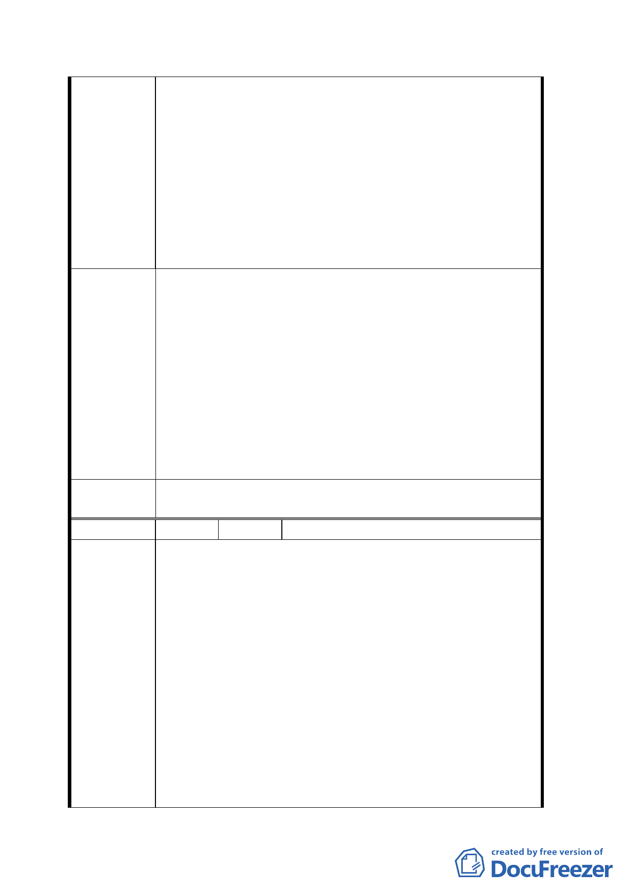

增法第 52 條之 2 規定居民若在民國 35 年 12 月
31 日前若有設籍且居住事實，則可申購，現西
寧南路 261、263 住戶已進行申購中。
3. 計畫廣場用地因已面臨三條大馬路（中華路一
段、長沙街二段、貴陽街二段）勿需用到西寧南
路面，而且配合舊城區更新改建軸線發展需求，
調整土地使用，促進土地利用效益，照理不應只
併吞西寧南路 261 號私地而造成西寧南路 265、
267、269 及貴陽街口二戶共五間房屋淪為畸
零，且沿街面被中段。
1. 請國有地賣我們因為我們有優先承購權。讓我們
西寧南路從 261 至貴陽街 3-5 號原是商業商區，
盼能改建成大樓，以利整條西寧南路街道美觀繁
榮，提高都市更新，另創萬華新市容。
2. 請國有財產局儘速優先把漢中段二小段 132、
建議辦法
133、134、137-1、137-2、137-3 地號讓售予居
民，促使西寧南路 261、263、265、267、269
號及貴陽街二段 3-5、5 號連續共 7 間建築物，
能就地改建成商業大樓，使得西寧南路整條街道
整齊畫一、市容美觀，達到都市更新、以利都市
商業發展。
委員會決
議
同決議一、二。
編 號 15 陳情人 鍾鼎舜
一、有關位於萬華區中華路一段 174 號，即漢中段
2 小段 5、5-1、8、8-1、8-2、132、133、134、135、
136、137、137-1、137-2 等 13 筆約 3,084 坪，商
四之國有土地，市府擬變更為廣場，提出建議如後。
二、近年來受世界經濟之影響，房地產大不如前，
本 13 筆土地，地上違章使用達五、六十年之久，陳
陳情理由
舊窳陋不堪，各國大城市沒有的現象，我中華民國
首善之臺北市卻存有傷害國家體面不堪入目之違
建，遲遲無能解決處理之策。
三、建議唯一解決之道，請求國有財產局降低價格
標售，而且標售後，國家不但可以收入一筆為數不
少之土地款，今係建築完成，每年房屋稅、土地稅、
遠比現在這十三筆土地毫無分文收入，而且又不浪
費土地資源，可達地盡其力之旨意，市容當可隨之
一八